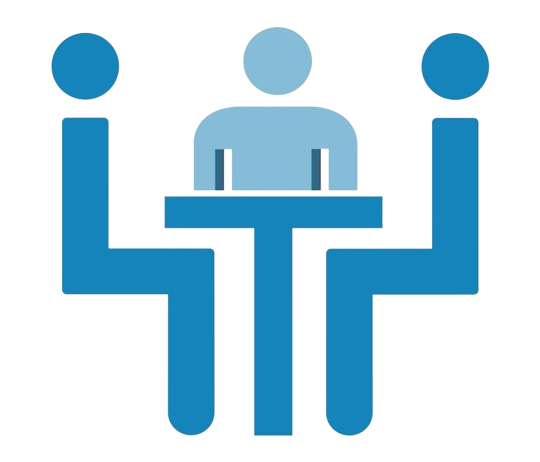

Use Cases
Where can be integrated?

Social Media Platforms:
Watch live streams with sign language interpretation

Video Calls
Use sign language translators in video calls to provide real-time interpretation

Live Meetings
Enable deaf participants to actively engage in live meeting

Online Education:
Enabling deaf students to participate in online education
Medical Settings
Facilitate communication between healthcare providers and deaf patients

Legal setting
Ensure equal access to justice for deaf individuals